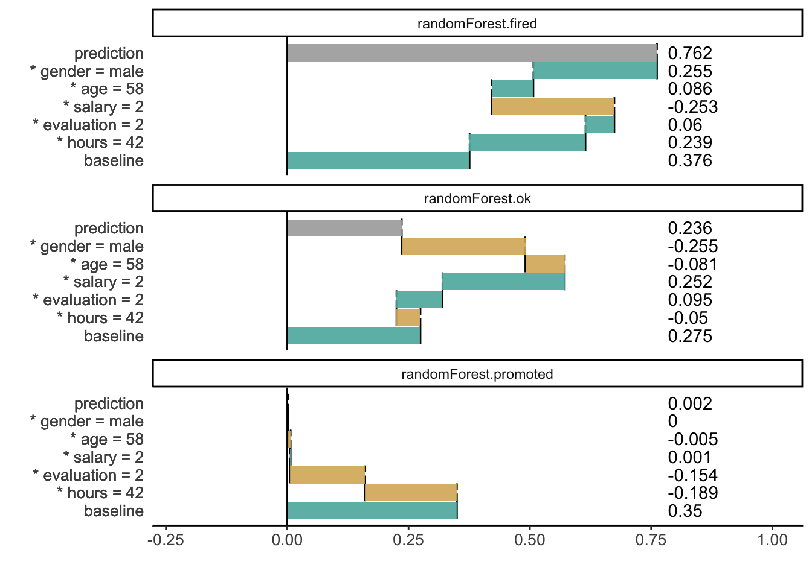

Chapter 6 Average variable attributions
In the Section ?? we show the problem related to the ordering of variables. In the Section 4 we show an approach in which the ordering was determined based on single step assessment of variable importance.
In this section we introduce other, very popular approach for additive variable attribution. The problem of contributions that depends on the variable ordering is solved by averaging over all possible orderings.
This method is motivated with results in cooperative game theory and was first introduced in (Štrumbelj and Kononenko 2014). Wide adoption of this method comes with a NIPS 2017 paper (Lundberg and Lee 2017) and python library SHAP https://github.com/slundberg/shap. Authors of the SHAP method introduced also efficient algorithm for tree-based models, see (Lundberg, Erion, and Lee 2018).
6.1 Intuition
Since in sequential attribution effect depends on the ordering. Here the idea is to average across all possible orderings.
TODO: a nice example
6.2 Method
The name Shapley Values comes from the solution in cooperative game theory attributed to Lloyd Shapley. The original problem was to assess how important is each player to the overall cooperation, and what payoff can he or she reasonably expect from the coalition? (Shapley 1953)
In the context of model interpretability the payoff is the average model response while the players are the variables in the conditioning. Then Formula for variable contributions is following.
\[ v(f, x^*, i) = \frac 1{|P|}\sum_{S \subseteq P\setminus \{i\}} {{|P|-1}\choose{|S|}}^{-1} \left(E [f(X) | X_{S \cup \{i\}} = x^*_{S \cup \{i\}}] - E [f(X) | X_{S} = x^*_{S}]\right) \] where \(P = \{1, \ldots, p\}\) is the set of all variables. The intuition beyond this contribution is following. We consider all possible orderings of variables (yes, there is \(2^p\) of them) and calculate the contribution of variable \(i\) as an average from contributions calculated in particular orderings.
The part \(E[f(X) | X_{S \cup \{i\}} = x^*_{S \cup \{i\}}] - E [f(X) | X_{S} = x^*_{S}]\) is the contribution of variable \(i\) which is introduces after variables from \(S\).
Time complexity of this method is \(O(2^p)\) where \(p\) stands for the number of variables. Such complexity makes this method impractical for most cases. Fortunately it is enough to assess this value. (Štrumbelj and Kononenko 2014) proposed to use sampling. (Lundberg, Erion, and Lee 2018) proposed fast implementations for tree based ensembles.
Properties
Shaply values have (as a single unique solution) following properties
- Local accuracy. Sum of attributions is equal to the model response. \[ f(x^*) = \sum_{i} v(f, x^*, i) \]
- Missingness, if simplified (add to notation) input is 0, then it’s impact is also 0 \[ x_i^* = 0 implies v(f, x^*, i) = 0 \]
- Consistency, if a new model \(g\) is larger for model \(f\) then it’s attributions are larger than attributions for \(f\).
6.3 Example: Hire or Fire?
6.4 Pros and cons
Shapley Values give a uniform approach to decompose model prediction into parts that can be attributed additively to variables. Below we summarize key strengths and weaknesses of this approach.
Pros
- There is a nice theory based on cooperative games.
- (Lundberg and Lee 2017) shows that this method unifies different approaches to additive features attribution, like DeepLIFT, Layer-Wise Relevance Propagation, LIME.
- There is efficient implementation available for Python.
- (Lundberg and Lee 2017) shows more desired properties of this method, like symmetry or additivity.
Cons
- The exact calculation of Shapley values is time consuming.
- If the model is not additive, then the Shaply scores may be misleading. And there is no way to determine if model is far from additiveness.
Note that fully additive model solutions presented in sections ??, 4 and 6 lead to same variable contributions.
6.5 Code snippets for R
In this section we will present an example based on the HR dataset and Random Forest model (Breiman et al. 2018). See the Section 18.1 for more details.
library("DALEX")
library("randomForest")
set.seed(123)
model_rf <- randomForest(status ~ gender + age + hours + evaluation + salary, data = HR)First, we use a shapper package - a wrapper over SHAP python package.
library("shapper")
Y_train <- HR$status
x_train <- HR[ , -6]
x_train$gender <- as.numeric(x_train$gender)
model_rfs <- randomForest(x = x_train, y = Y_train)
p_fun <- function(x, data){
predict(x, newdata = data, type = "prob")
}
new_observation <- data.frame(gender = 1,
age = 57.7,
hours = 42.3,
evaluation = 2,
salary = 2)
x <- individual_variable_effect(x = model_rfs, data = x_train, predict_function = p_fun,
new_observation = new_observation)
#plot(x)
library("ggplot2")
x$`_vname_` <- reorder(x$`_vname_`, x$`_attribution_`, function(z) -sum(abs(z)))
levels(x$`_vname_`) <- paste(sapply(1:6, substr, x=" ", start=1), levels(x$`_vname_`))
ggplot(x, aes(x=`_vname_`, xend=`_vname_`,
yend = `_yhat_mean_`, y = `_yhat_mean_` + `_attribution_`,
color=`_sign_`)) +
geom_segment(arrow = arrow(length=unit(0.30,"cm"), ends="first", type = "closed")) +
geom_text(aes(label = round(`_attribution_`, 2)), nudge_x = 0.45) +
geom_segment(aes(x = "_predicted_",xend = "_predicted_",
y = `_yhat_`, yend = `_yhat_mean_`), size = 2, color="black",
arrow = arrow(length=unit(0.30,"cm"), ends="first", type = "closed")) +
geom_text(aes(x = "_predicted_",
y = `_yhat_`, label = round(`_yhat_`, 2)), nudge_x = 0.45, color="black") +
geom_hline(aes(yintercept = `_yhat_mean_`)) +
facet_grid(`_label_`~`_ylevel_`) +
scale_color_manual(values = c(`-` = "#d8b365", `0` = "#f5f5f5", `+` = "#5ab4ac",
X = "darkgrey")) +
coord_flip() + theme_minimal() + theme(legend.position="none") + xlab("") + ylab("")
Here we use the iml package, see more examples in (Molnar, Bischl, and Casalicchio 2018).
Explanations for a new observation.
new_observation <- data.frame(gender = factor("male", levels = c("male", "female")),
age = 57.7,
hours = 42.3,
evaluation = 2,
salary = 2,
status = factor("fired"))
shapley = Shapley$new(explainer_rf, x.interest = new_observation)
shapley## Interpretation method: Shapley
## Predicted value: 0.768000, Average prediction: 0.375522 (diff = 0.392478) Predicted value: 0.232000, Average prediction: 0.275811 (diff = -0.043811) Predicted value: 0.000000, Average prediction: 0.348667 (diff = -0.348667)
##
## Analysed predictor:
## Prediction task: unknown
##
##
## Analysed data:
## Sampling from data.frame with 7847 rows and 6 columns.
##
## Head of results:
## feature class phi phi.var feature.value
## 1 gender fired 0.15184 0.06525201 gender=male
## 2 age fired 0.10980 0.07939374 age=57.7
## 3 hours fired 0.23736 0.11281486 hours=42.3
## 4 evaluation fired 0.03640 0.01645164 evaluation=2
## 5 salary fired -0.17504 0.04931632 salary=2
## 6 status fired 0.00000 0.00000000 status=firedAnd the plot with Shapley attributions.

See more examples for iml package in the (Molnar 2018b) book.
References
Štrumbelj, Erik, and Igor Kononenko. 2014. “Explaining Prediction Models and Individual Predictions with Feature Contributions.” Knowledge and Information Systems 41 (3): 647–65. https://doi.org/10.1007/s10115-013-0679-x.
Lundberg, Scott M, and Su-In Lee. 2017. “A Unified Approach to Interpreting Model Predictions.” In Advances in Neural Information Processing Systems 30, edited by I. Guyon, U. V. Luxburg, S. Bengio, H. Wallach, R. Fergus, S. Vishwanathan, and R. Garnett, 4765–74. Curran Associates, Inc. http://papers.nips.cc/paper/7062-a-unified-approach-to-interpreting-model-predictions.pdf.
Lundberg, Scott M., Gabriel G. Erion, and Su-In Lee. 2018. “Consistent Individualized Feature Attribution for Tree Ensembles.” CoRR abs/1802.03888. http://arxiv.org/abs/1802.03888.
Shapley, Lloyd S. 1953. “A Value for N-Person Games.” In Contributions to the Theory of Games Ii, edited by Harold W. Kuhn and Albert W. Tucker, 307–17. Princeton: Princeton University Press.
Breiman, Leo, Adele Cutler, Andy Liaw, and Matthew Wiener. 2018. RandomForest: Breiman and Cutler’s Random Forests for Classification and Regression. https://CRAN.R-project.org/package=randomForest.
Molnar, Christoph, Bernd Bischl, and Giuseppe Casalicchio. 2018. “Iml: An R Package for Interpretable Machine Learning.” JOSS 3 (26). ournal of Open Source Software: 786. https://doi.org/10.21105/joss.00786.
Molnar, Christoph. 2018b. Interpretable Machine Learning. https://christophm.github.io/interpretable-ml-book/.